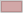

Stadtgrenze
 | Stadtgrenze |
Reduktionsplan
Im Rahmen des Baubewilligungsverfahrens wird unter anderem die Anzahl bewilligungsfähiger Parkplätze für Autos, Motorräder und Velos definiert. Für die Herleitung und Beurteilung des Parkplatzbedarfes, ist gemäss der städtischen Parkplatzverordnung (PPVO) vorgesehen, die unterschiedlichen Erschliessungsqualitäten im Stadtgebiet zu berücksichtigen. Hierzu definiert der Reduktionsplan 5 verschiedene Gebiete.
Weitere Informationen zu den Themen
PPVO und ParkplatzbedarfReduktionsgebiete
 | Altstadt |
Gebiet 1 | |
Gebiet 2 | |
Gebiet 3 | |
Gebiet 4 | |
Gebiet 5 |
Stadtgrenze
| Stadtgrenze |